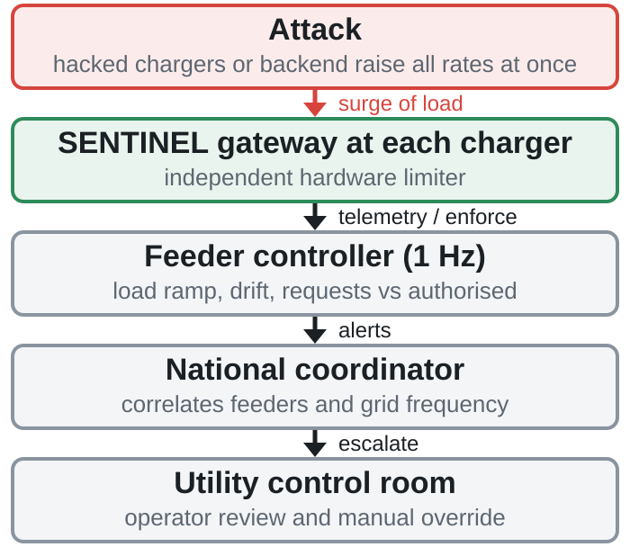
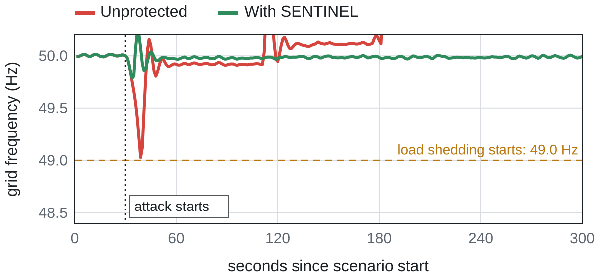
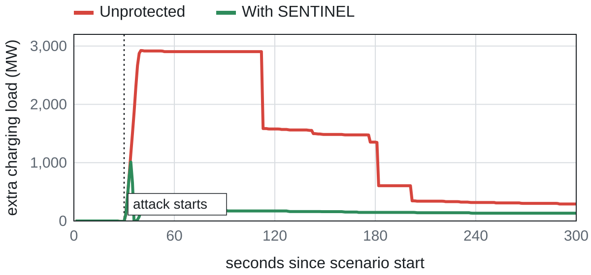

SENTINEL
Abstract
Electric-vehicle (EV) chargers are networked, high-power loads whose numbers are growing rapidly. If a large share is compromised, an adversary can raise charging rates simultaneously, within battery-management limits, and push the grid beyond its reserve. We present SENTINEL, a feeder-level cyber-physical intrusion detection and automated mitigation scheme. It scores load ramp, cumulative drift, request-versus-authorisation mismatch and synchrony, and throttles non-compliant chargers in stages through an independent hardware gateway. In a simulated UAE grid with 14 feeders and a 2040 fleet of 1.5 M chargers, a nationwide attack on 60% of chargers causes 2,131 MW of load shedding and five feeder trips without protection. SENTINEL prevents both, begins throttling within 3 s, and raises no false alarm on a legitimate tariff surge.
1 Background and Motivation
Power grids underpin hospitals, water, transport, finance and industry, and are targets for external actors. The 2015 attack on Ukraine's grid opened breakers at 30 substations and interrupted supply to about 225,000 customers[1]. Large outages are costly: the 2003 North American blackout affected about 50 million people, with estimated losses of roughly $6 to 10 billion[5,6].
Meanwhile EVs exceeded 20% of global new-car sales in 2024, with over 40% projected by 2030[2]. UAE policy targets about 10% of the fleet by 2030 and 50% by 2050[3]. Dubai alone had 47,944 EVs and about 1,860 public charge points at the end of 2025, and Abu Dhabi targets 70,000 charge points by 2030[3,4]. Each charger is an internet-connected load of about 7 to 150 kW.
2 Problem Statement and Research Questions
Charger security is heterogeneous: many vendors, protocol versions and operators, with no universal enforced baseline[7]. Prior work shows that synchronised manipulation of high-wattage IoT loads, including EV chargers, can disrupt grid operation[8,9]. A compromised charger population or backend therefore acts as a distributed load-altering attack, most effective overnight when vehicles are connected. We do not study how chargers are compromised. We study how the grid can be protected given compromise.
- How many compromised chargers are needed to trigger load shedding, and how does this change as EV adoption grows?
- Which charger class, home or public, gives an adversary the most usable load?
- Can feeder-level detection and staged throttling stop a surge before relays and load shedding act, without false alarms on legitimate surges?
3 Threat Model
Adversary
- Controls a fraction p of chargers, or the charging-station management system (CSMS).
- Commands arrive within 8 s (step) or over 90 s (slow ramp).
- Forces each charger to a = 0.95 of the battery-management limit; a > 1 makes the vehicle disconnect, defeating the attack.
- Only plugged-in vehicles with state of charge below 98% respond.
- May poison the CSMS so that malicious requests appear authorised.
Defender
- Feeder and charger-group meters at 1 Hz; PMU frequency.
- CSMS-authorised charging profiles, unless poisoned.
- Independent hardware gateway on 95% of chargers; 1.5 s command latency.
4 Methodology
4.1 Grid and feeder model
Single-area frequency response[10] in per unit on online generation, with droop governor and under-frequency load shedding (UFLS):
H = 4 s, R = 5%, D = 1, Tg = 4 s, spinning reserve ρ = 8%, online generation = 1.15 × demand. UFLS at 49.0 / 48.8 / 48.6 / 48.4 Hz sheds 10 / 10 / 15 / 15% of demand after 0.3 s. UAE peak demand ≈ 34 GW[12] with a summer diurnal profile.
Seven emirates, each with a general feeder and an EV-dense district feeder (14 feeders). Rating = 1.12 × planned load; inverse-time thermal relay with 110% pickup.
4.2 Fleet and attack model
About 2,400 agents, each a cluster of w real chargers (home AC, public AC, DC fast), with plug-in probability by hour and vehicle limits. EV count follows logit interpolation of policy anchors: 2% (2025), 10% (2030), 30% (2040), 50% (2050) of a 4.5 M vehicle parc growing 3% per year.
4.3 Detection
Each feeder is scored at 1 Hz from four signals, each scaled to [0, 1]: load ramp, cumulative drift, request-versus-authorised deviation, and synchrony (share of chargers stepping up within 5 s):
St is a CUSUM statistic[11] of the residual rt against the CSMS schedule (or a slow forecast when the CSMS is untrusted). Watch at R ≥ 0.30; throttle at R ≥ 0.55 for 2 s (≥ 0.75 for 1 s), or when projected feeder load exceeds 104% of rating.
4.4 Mitigation
A staged state machine per feeder: WATCH, THROTTLE (force requests back to the authorised profile; headroom clamp holds feeders below 97%), ISOLATE (quarantine non-compliant units at 6 A) and RECOVER (5%/s release). A national coordinator escalates the remaining feeders when two or more are throttled.

Fig. 1. SENTINEL architecture. Enforcement is by an independent hardware gateway, so a compromised charger cannot ignore it.
4.5 Evaluation protocol
For each scenario the same fleet, noise and attack are simulated with and without SENTINEL (seed 7, 300 s, attack at t = 30 s). Metrics: frequency nadir, peak load shed, feeder trips, time to throttle, and false quarantines.
5 Results
RQ1 Chargers needed
| Year | EVs (M) | Chargers (M) | Attackable (MW) | Share of chargers needed |
|---|---|---|---|---|
| 2030 | 0.52 | 0.34 | 1,141 | not reachable |
| 2035 | 1.08 | 0.76 | 2,391 | 80% |
| 2040 | 2.10 | 1.47 | 4,641 | 41% |
| 2045 | 3.22 | 2.25 | 7,096 | 27% |
| 2050 | 4.71 | 3.30 | 10,396 | 18% |
From 2035 the absolute number needed is about 606,000 chargers, while the share falls as the fleet grows. A single EV-dense Dubai feeder needs 57% (2030), 36% (2035) and 26% (2040) compromised.
RQ2 Home vs public chargers
| Class | Installed | Plugged in | MW | Share | kW / unit |
|---|---|---|---|---|---|
| Home AC | 1.26 M | 85% | 4,539 | 98% | 4.2 |
| Public AC | 185 k | 11% | 86 | 2% | 4.4 |
| DC fast | 25 k | 6% | 17 | <1% | 11.5 |
5 Results (continued)
RQ3 Detection and mitigation

Fig. 2. Grid frequency, nationwide attack on 60% of chargers, 2040, 01:30. Unprotected frequency crosses the 49.0 Hz load-shedding threshold.

Fig. 3. Charging load above plan. SENTINEL holds the surge to a brief transient.
| Scenario | No defence | SENTINEL | Throttle (s) | ||||
|---|---|---|---|---|---|---|---|
| Hz low | Shed MW | Trips | Hz low | Shed MW | Trips | ||
| Nationwide, 60% | 48.94 | 2,131 | 5 | 49.77 | 0 | 0 | 3 |
| Nationwide, 30% | 49.81 | 0 | 1 | 49.85 | 0 | 0 | 3 |
| Dubai district, 70% | 49.91 | 0 | 1 | 49.95 | 0 | 0 | 4 |
| Slow ramp + poisoned CSMS | 48.99 | 2,131 | 5 | 49.91 | 0 | 0 | 9 |
| Legitimate tariff surge | 49.95 | 0 | 0 | 49.95 | 0 | 0 | none |
| Worst case: 2050, 100%, 30% enforceable | 48.37 | 10,656 | 7 | 48.71 | 4,262 | 6 | 2 |
SENTINEL fully prevented load shedding and trips in 8 of the 9 benchmark attacks that harmed the unprotected grid, and produced no false alarm on a legitimate tariff surge. The exception is the coverage-limited worst case.
6 Discussion and Limitations
- Overnight exposure is dominated by home chargers (98% of attackable load), so defences that rely on public-operator security alone miss most of the risk.
- Feeder-level monitoring does not depend on charger or backend trust: the poisoned-CSMS slow-ramp attack was caught later (9 s) by cumulative drift.
- Effectiveness is bounded by enforcement coverage: with 30% enforceable, shedding fell from 10,656 to 4,262 MW but was not eliminated.
- Single-area model with illustrative parameters; not a validated power-system study.
- Detector and simulator were built by the same authors; risk weights are hand-tuned and no ROC analysis is yet available.
- The feeder clamp acts instantly in the model, which flatters latency robustness.
- Aggregated charger clusters; no protocol-level (OCPP) simulation.
7 Conclusion and Future Work
Because the grid, not the charger, is the asset to protect, a feeder-level detector with independent enforcement can stop a coordinated charging surge in seconds, before breakers or load shedding act. The threat window opens as the overnight home-charging fleet grows. Next: an ESP32 hardware gateway (current sensing, pilot-signal limiter, contactor), hardware-in-the-loop validation with utility data, learned risk weights with ROC analysis, and a multi-area grid model.
Contributions
- A quantified threat window: how many compromised chargers are needed, by year and time of day, for nationwide and feeder-level attacks.
- A three-layer feeder-level detector and staged mitigation that also handles a poisoned charging backend.
- An open, reproducible interactive simulator (live demo and source code via the QR code above).